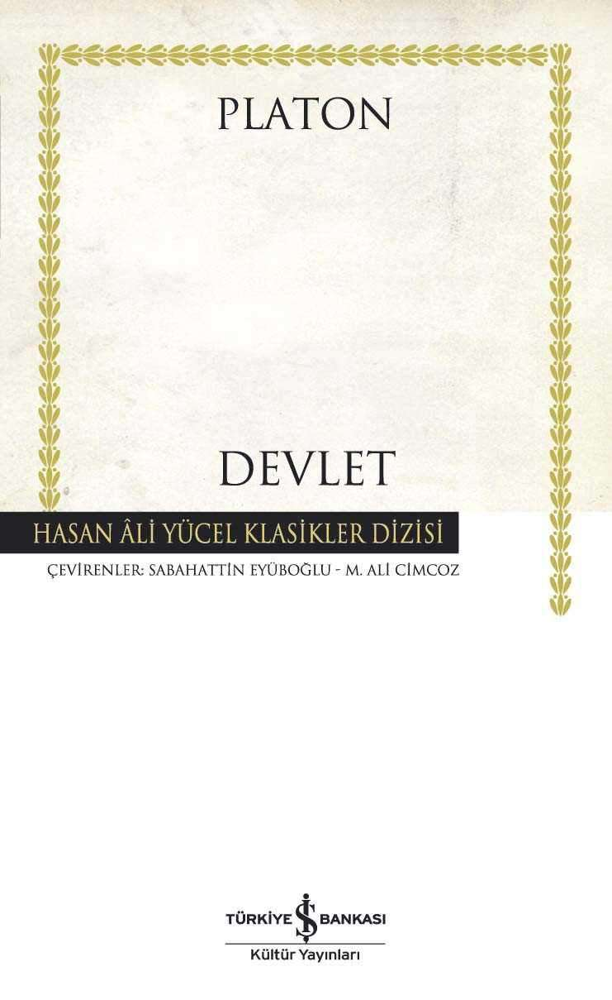
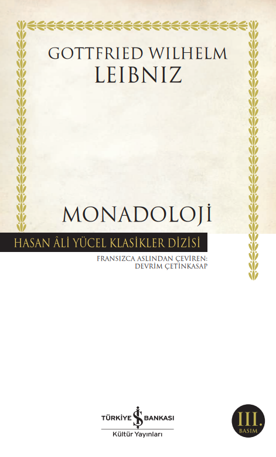
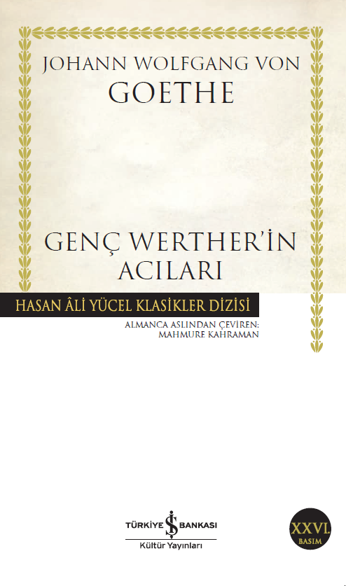

-
Devlet
Devlet Ciltli Platon (Eflatun, İÖ yaklaşık 428/7 – İÖ yaklaşık 348/7) : Bugünkü üniversitenin atası sayılan Akademia’nın kurucusu (İÖ 387) ve hocası Sokrates’i konuşturduğu “diyaloglar”la felsefeyi yazıya en iyi aktarmış olan ustalardan biridir. Sokrates’in Savunması (Apologia) ile birlikte diyaloglarının en tanınmışı olan Devlet (Politeia)’te ise Platon, “iyilik”, “eşitlik”, ‘güçlülük” ve “haklılık” gibi “insanlık durumları”nı irdeleyerek düşlediği en iyi devleti anlatmış ve bu temel yapıt, ister yanında ister karşısında olsunlar, 2000 yılı aşkın süredir ortaya konan bütün devlet kuramı ya da toplum düzenlerinin başvuru kaynakları arasında yer almıştır.
Sabahattin Eyüboğlu (1908-1973); Hasan Âli Yücel’in kurduğu Tercüme Bürosu’nun başkan yardımcısı ve Cumhuriyet döneminin en önemli kültür insanlarından biriydi. Tek başına ya da “imece” birlikteliğiyle yaptığı çeviriler, Hayyam’dan Montaigne’e, Platon’dan Shakespeare’e hep, dünya kültürünün doruk adlarındandı.
M. Ali Cimcoz: Çevirmen, seslendirme sanatçısı ve Türkiye’nin ilk özel galerisi Maya’nın kurucu yöneticisi olan Adalet Cimcoz’un iş ve hayat ortağıdır. Sabahattin Eyüboğlu ile yaptıkları Devlet çevirisi ise, 1959’da Türk Dil Kurumu’nun ilk çeviri ödülüne değer bulunmuştur.
-

Monadoloji
Gottfried Wilhelm Leibniz (1646-1716): Alman filozof ve matematikçi. Batı düşüncesinin temel taşlarından biridir. Mantık, matematik, fizik ve metafiziğe önemli katkılarda bulunmakla kalmamış, bilimin hemen her dalında düşünmeye, üretmeye çabalamıştır. Dünyanın ilk dört işlem yapabilen hesap makinesini tasarlamış, ikili sayma sistemini geliştirmiş, mekanik aygıtlar, yeldeğirmenleri hatta denizaltılar üzerine çalışmış, bu konulara dair fikirlerini, teorilerini, denemelerini içeren binlerce mektup ve yazı bırakmıştır. Elinizdeki kitapta Leibniz’in Descartes’ın cevher kavramından hareketle geliştirdiği monad teorisinin yanı sıra, konuya dair yazdığı mektup ve yazılardan bir derleme de yer almaktadır.
Devrim Çetinkasap (1975): Marmara Üniversitesi Kamu Yönetimi Bölümü’nden 2004’te mezun oldu. Galatasaray Üniversitesi Felsefe Bölümü’nde yüksek lisansını tamamladı. Fransızca ve İngilizceden tarih, siyaset bilimi ve felsefe alanlarında çeviriler yapıyor.
-

Genç Werther’in Acıları
Johann Wolfgang von Goethe (1749-1832): Alman edebiyatının dünyaca ünlü, en önemli yazarlarındandır. Hukuk eğitimi alan ve resim sanatına da ilgi duyan Goethe, doğa bilimleriyle de uğraşmış, araştırmalar yapmış, yazılar yazmıştır. Dünya görüşünü ve sanat anlayışını aktardığı Şiir ve Hakikat en dikkati çekici eserlerinden biridir. Ayrıca Roma Ağıtları, Faust ve pek çok eseri yayımlandığı dönemde büyük ilgi görmüş, yazarın yüzyıllar süren edebi ününü pekiştirmiştir. 1774 yılında yazdığı Genç Werther’in Acıları daha önce şiirleri ve oyunları yayımlanan Goethe’nin ilk romanıdır. Eser büyük bir ilgiyle karşılanmış ve 25 yaşındaki yazara kısa sürede bütün Avrupa’da ün kazandırmıştır.
Mahmure Kahraman (1956): Lise eğitimini Trabzon’da tamamladıktan sonra, iki yıl Münih’te yaşadı ve Goethe Enstitüsü’ne devam etti. 1983 yılında Ankara Üniversitesi DTCF Alman Dili ve Edebiyatı bölümünü bitirdi. Yüksek lisans eğitimini 1986’da, doktora eğitimini 1992 yılında tamamladı. Ege Üniversitesi’nde Almanca okutmanı olarak çalıştı. J. P. Eckermann, F. Nietzsche ve J.W. Goethe’den çeviriler yaptı.